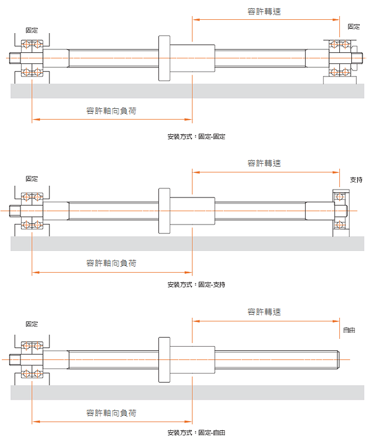
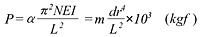
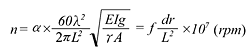

客服專線：(03)280-6015
滾珠螺桿的製作範圍
精密級滾珠螺桿的製作範圍
最小外徑 10mm 軸長可達 400mm
最大外徑 80mm 軸長可達 6000mm
註:以上為普通的製作尺寸，若有特殊規格請與本公司業務聯絡。
轉造級 滾珠螺桿的製作範圍
最小外徑 14mm 軸長可達 1000mm
最大外徑 50mm 軸長可達 3000mm
註:以上為普通的製作尺寸，若有特殊規格請與本公司業務聯絡。
安裝方法
安裝方法對於選擇滾珠螺桿的規格時為重要的項目 如圖下圖列舉三種最常用安裝方法。 而安裝方法的差異在容許軸向負荷的公式解說。
容許軸向負荷
(1)挫屈負荷
因為工座檯、工件…等自重，對螺桿產生的壓縮負荷，所以必須驗算其對螺桿軸挫屈的安全性。如下公式所示:
- α： 安全係數 (取 α=0.5)
- E： 縱彈性係數 (E = 2.1 X 104 kgf / mm2)
- I： 螺稈的軸斷面之最小二次力矩 ( I = πdr4 / 64 mm4)
- dr： 螺桿軸牙底直徑 ( dr = 螺桿節圓直徑-鋼珠直徑mm )
- L： 安裝間距 ( mm ) 螺桿兩端安裝之相對距離
- m．N：
依滾珠螺桿之安裝方法而定之係數
支持 一 支持 m = 5.1 (N=1)
固定 一 支持 m = 10.2 (N=2)
固定 一 固定 m = 20.3 (N=4)
固定 一 自由 m = 1.3 (N=1/4)
(2)容許拉仲壓縮負荷 :
當安裝的距離比較短時，安裝方式的差異影響較小，由另外兩種方法驗算之 :
a．螺桿軸之降伏應力的容許拉仲壓縮負荷 :
P = e． A = e．π．dr2 / 4
在此
- e : 容許拉仲壓縮應力 (kgf/mm2)
- A : 螺桿軸牙底直徑之斷面積 (mm2)
- dr : 螺桿軸牙底直徑 (mm)
- b．滾珠溝槽部之容許負荷 : 最大軸方負荷必須遠小於的基本靜額定負荷。
最大軸方負荷必須遠小於的基本靜額定負荷。詳細說明請參照滾珠溝槽部之容許負荷。
容許轉速
(1) 危險速度 :
當發生共振時之速度，稱之為危險速度。共振產生時的影訾之大造成加工品質不良，甚而造成機器損壞，所以一定要極力避免馬達之轉速和滾珠螺桿的自然頻率發生共振。本公司以危險速率的80%以下為容許轉速。如下公式所示 :
若求得的容許轉速不符合貴公司的設計需求時可在中間加裝支撐以提高螺桿之固有振動，藉此提高容許轉速。
(2) 滾珠螺桿的dm,n值
dm 為螺桿之節圓直徑、n
為滾珠螺桿的最大轉速，所以
dm,n 值即表示滾珠之公轉速度。其為影響滾珠螺桿的噪音、工作溫度、壽命與循環系統之最大因素。
一般而言滾珠螺桿值的限制如下式：
精密級 :
dm,n ≧
70000
轉造級 :
dm,n ≦
50000
但隨者製造技術的提升，dm,n
值已不再受此限制。值甚至己有高達十萬以上的滾珠螺桿。
若有大
dm,n 值之需求，請接洽本公司業務人員。
此種
dm,n 值之限制，僅供一般參考。
於同一牙底直徑的螺桿，其值是隨螺桿兩端之安裝方式、安裝間距之變化而有不同的容許值。
螺桿軸設計注意事項
-
1、完全牙 : (使用內循環式螺帽時)
當為內循環滾珠螺桿時，由於螺帽裝配時之需要，在設計軸端時至少必須有一端是完全牙，且至末端為止的直徑都必須比牙底直徑小 0.2mm 以上。 -
2、螺桿軸雌及螺帽周邊之設計 :
機檯的設計，必須注意滾珠螺桿安裝時的週邊機構。避免因週邊機構的影訾或限制，造成安裝滾珠螺桿於機檯上時，必須將螺帽和螺桿分離拆開。因為分離時難免會引起鋼珠的脫落， 螺帽的組裝精度反預壓力變化，滾珠螺桿外循環彎管破損等情形發生，嚴重者將會造成滾珠螺桿的損壞而不堪使用，不得不卸下時，請與本公司聯絡會有專人與您服務。 -
3、有效螺紋兩測雌部的硬度 :
滾珠螺桿的熱處理是採用中週波感應熱理，所以螺紋兩端各 15mm 長不在有效熱處理範圍內，硬度會較低，故決定有效螺紋長度時請加以考慮。 -
4、中間支撐座 :
螺桿過長時，由於自重而中間產生下垂現象，此現象曾導致螺桿承受徑同負荷，也會有因螺桿軸之回轉而給軸端加上過大的彎曲應力之危險。 在此建議可以在螺桿下萬多加設中間支撐構造，以抑制螺帽因自重所產生的下垂量。支撐構造肓裝置於螺桿的螺帽周圍， 能在軸方向做移動的移動軸偏震抑制裝置以及於機台上之固定式軸偏震抑制構造等兩種。但使用固定式時須注意當工作檯通過其上方時，要能避開。